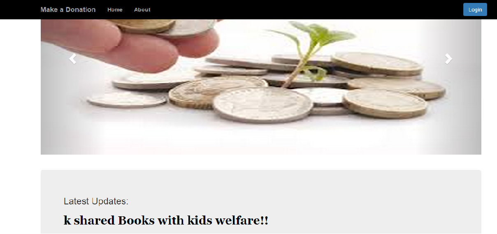

Share is a website which allows people to make donations to various organisation. People can either donate thing that they already own or make a purchase which will then be delivered to the organisation. Used Materials : 1. Old clothes 2. Food - Incase of Big events and functions this portal can be used by person to contact the nearest NGO to collect food 3. Book Purchase things: User can purchase things from one or more website and forward it to a particular organisation.
Login : A user needs to login into the portal in order to make any kind of donation. This is required so that person can shop for items store it to the cart and also see the status of the deliveries
Register : A person who is not register can register using the register page. We initailly do not store the contact information for the user.This can be updated using the contact page.
Profile: A user can edit the profile. n the user profile we are storing the email id, contact and address of the user. Email id is required so that we can dsend updates about the payment transaction and the NGO information incase the user requests this information.Conatant and address are for the organisation so that they can contact the person. User can also change the password.
Live updates : Any person visiting the web page will be receiving live updates about the donations currently made by the users. It fetches new data from the server at regular intervals.
Share: A person can make a donation using this web page. User has option of giving old clothes, books or purchasing online and having it delivered to the organisation.
